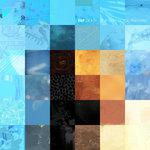

Music Reviews
-

Surfer Blood Carefree Theatre
The Florida foursome return, hoping to recapture the excitement they generated on their emergence over a decade ago.
Ethan Gordon reviews... -
Lydia Loveless Daugher
Fresh from a break from the industry, alt-country star Lydia Loveless returns with Daughter, her first album to be released on her own imprint: Honey, You're Gonna Be Late Records,
Ethan Gordon reviews... -
Idles Ultra Mono
In Ultra Mono, IDLES up the ante to retain their crown of best punk band going.
Mark Moody reviews... -
Doves The Universal Want
The Machester trio return after a decade-long absence with lush, stunning post-Britpop that evokes a sense of nostalgia both thematically and musically.
Juan Edgardo Rodríguez reviews... -

Into It. Over It Figure
Figure is an album filled with Into It. Over It. trademarks: conversational lyrical sentiments, the occasional math-rock guitar part, and anchoring drums. But even with Evan Thomas Weiss' sturdy, commonly excellent songwriting, it just never clicks.
Ethan Gordon reviews... -
Widowspeak Plum
The Brooklyn duo's insight into their practical concerns is efficient, pleasant, and never overbearing—providing just enough details as they allow their smooth country-pop arrangements to take flight.
Juan Edgardo Rodríguez reviews... -

Ruston Kelly Shape & Destroy
The singer-songwriter's talent for frank, moderately depressing songwriting is still displayed, but Shape & Destroy doesn’t have quite the candor and quality of his first full-length.
Ethan Gordon reviews... -

Katy Perry Smile
After a three-year wait, the pop singer's latest backtracks so much from 2017's Witness that she seems convinced it never happened.
Ethan Gordon reviews... -
Bully Sugaregg
The band-turned-solo project of Alicia Bognanno feels more focused on loss and personal change than ever before on her third album.
Ethan Gordon reviews... -

EEP Death of a Very Good Machine
An El Paso, Texas, shoegaze group's self-released debut is a reminder that independent rock is as vibrant and vital as ever.
Kirk Sever reviews...